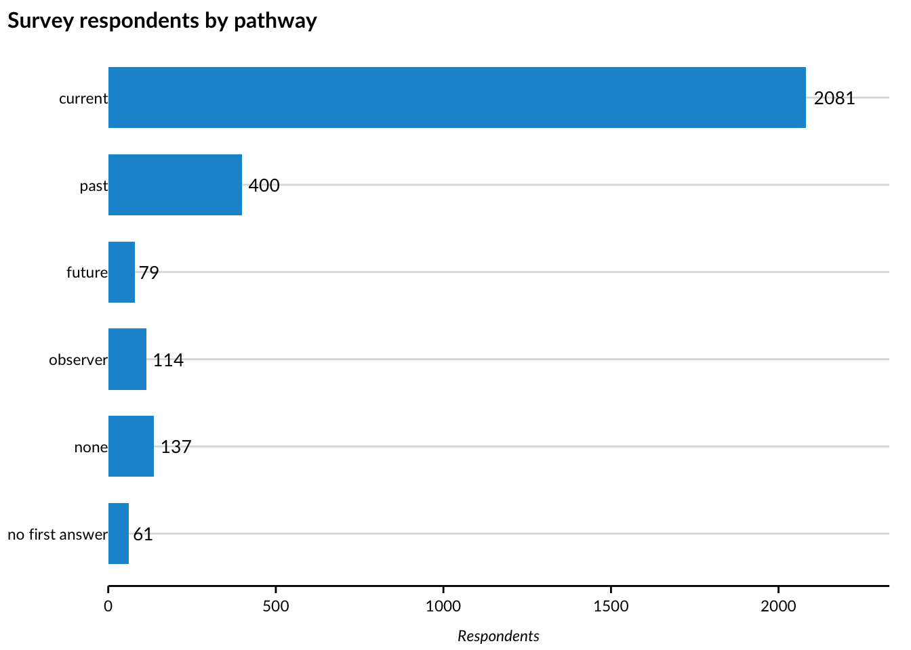

flowchart TD q1["q1 · Connection to care<br/>(choose all that apply)"] q1 -->|"caring for someone now, paid provider,<br/>or needs / receives care"| A q1 -->|"cared for someone in the past"| C q1 -->|"expects to give or need care"| B q1 -->|"knows someone who receives care"| D q1 -->|"none of these"| E A["current (a)<br/>q2a challenges · q3a supports · q4a who helps"] C["past (c)<br/>q2c · q3c · q4c"] B["future (b)<br/>q2b · q3b"] D["observer (d)<br/>q2d · q3d · q4d"] E["none"] A --> q6 C --> q6 B --> q6 D --> q6 E --> q6 q6["q6 · Ideal care (everyone)"] --> demo["Demographics<br/>ZIP · household · income · age · gender<br/>race · disability · political views"]
Cleaning the survey and canvassing data
The coalition delivers raw exports as Excel files to a Box folder. This program reads a local copy of that folder, cleans it, and writes four files:
survey_clean.csv: one row per survey respondentcanvassing_clean.csv: one row per canvassing contact (original form)canvassing_revised_clean.csv: one row per contact on the revised form (August 2026 on)data-dictionary.csv: every column in those files, with the question and answer text it came from and, for single-answer questions, the order of the answers
The survey in brief
The survey starts with a question about a person’s connection to care. The answer decides which of five sets of questions they see next, named for who was asked:
current(a): giving or receiving care nowpast(c): cared for someone in the pastfuture(b): expects to give or need care in the next five yearsobserver(d): knows someone who receives or needs carenone: none of these, so no further questions until ideal care
They are listed in routing order: a person who ticks answers from more than one group is meant to see the first set that applies.
Everyone then answers the same question about ideal care and the demographic questions.
One routing exception, not yet confirmed
The data mostly bear the routing rule out: a person eligible for both past and future was shown only the past questions. The exception is paid care providers who also cared for someone in the past, who were shown both the current and the past questions. We have not yet confirmed with Caring Across Generations whether that is intended. The cleaning assigns those respondents to current.
Column names in the clean files follow this structure. For the survey questions, the number is the topic and the letter is the pathway: the topics are 1, connection to care; 2, challenges; 3, supports that would help; 4, who helps; and 6, ideal care. So q2a is the challenges question asked of current caregivers, and q3d is the supports question asked of people who know someone receiving care. Demographic columns get plain names such as age and hh_income. The Variables page lists every column with the question and answer text behind it.
The steps at a glance
- Find the files. Use the research team’s data log to identify what each delivered file is; clean the survey and canvassing exports, and set aside test deliveries, open-text exports, and the pre-launch poll. Every file must be accounted for.
- Rename the columns from full question text to short names (
q1,q2a,age, …), checking that nothing is missing or unexpected. - Check for personal information. Address columns must be empty.
- Split the choose-all-that-apply questions into one TRUE/FALSE column per answer, keeping “Other” text word for word.
- Put single-answer questions in order (income, age, and so on).
- Work out which set of questions each person was shown (their “pathway”) from their first answer, and check that they answered those questions and no others.
- Tidy the rest: IDs and ZIP codes. Confirm no respondent appears twice.
- Do the same for canvassing, reusing the survey’s answer lists: once for the original form and once for the revised form introduced in August, which asks different questions.
- Write the clean files and a data dictionary describing every column.
Warnings in this document are expected
Each step compares the delivery with what we have seen before. A renamed column, an answer option not on our list, or a file the data log does not describe stops the program with a message saying what changed. When that happens, the fix is to update the list or the rule, not to skip the check.
Some checks warn instead of stopping. Those warnings appear below marked with !. The known ones (paid care providers shown two sets of questions, ZIP+4 entries, one canvassing contact who answered questions without agreeing to continue) are expected. A new one is the signal to investigate.
The live form does not match the questionnaire PDF
The wording in the live form differs from the official question documents in many places, and the export format itself has changed between deliveries (how answers are separated, punctuation, and the wording of nine questions). Answer and question text in this program comes from what we actually observe in the exports, not from the PDF, and we keep a running record of how the form really behaves as deliveries arrive.
Find the files to clean
The research team’s data log on Box records what every delivered file is: which tool (survey or canvassing), which link or form (f1, f2, c1, …), whether it holds closed-ended or open-text answers, complete or partial responses, whether it was a pre-launch test, the dates it covers, and the range of respondent IDs in it. This program uses that log to decide what each file is. The file name is used only as a cross-check, and a disagreement between the two is flagged.
This program cleans the closed-ended survey and canvassing exports. It leaves out the pre-launch test deliveries, and it does not read the open-text exports, the pre-launch poll, or the interview transcripts, which go to the text-analysis pipeline. Every file in the folder is either cleaned here or deliberately left out for one of those reasons, so a new kind of delivery cannot slip through unnoticed.
Show code
raw_dir <- here("data/raw/Raw data backups")
deliveries <- read_csv(here("data/raw/deliveries.csv"), show_col_types = FALSE)
mirror_files <- list.files(raw_dir) |>
str_subset("~\\$", negate = TRUE) |> # Excel lock files, present while a workbook is open
str_subset("DATA LOG", negate = TRUE)
# every mirrored file must be described in the delivery table
undescribed <- setdiff(mirror_files, deliveries$file)
if (length(undescribed) > 0) {
cli::cli_abort(c(
"{length(undescribed)} file{?s} in the mirror not described in deliveries.csv — re-run 00_ingest-raw.R:",
set_names(undescribed, rep("x", length(undescribed)))
))
}
real_closed <- deliveries |>
filter(folder == "Raw data backups", !test, content == "closed")
survey_files <- real_closed |> filter(tool == "survey") |> pull(file)
# the canvassing form was revised in Aug 2026 (forms numbered c1, c2, ...);
# the earlier form's files say f1. The two ask different questions and are
# cleaned separately.
canvassing_files <- real_closed |> filter(tool == "canvass", str_starts(form, "f")) |> pull(file)
canvassing_revised_files <- real_closed |> filter(tool == "canvass", str_starts(form, "c")) |> pull(file)
set_aside <- deliveries |>
filter(!file %in% c(survey_files, canvassing_files, canvassing_revised_files)) |>
mutate(why = case_when(
test ~ "pre-launch test delivery",
tool == "interview" ~ "interview transcript — text-analysis pipeline",
tool == "poll" ~ "pre-launch One Question Poll — text-analysis pipeline",
content == "open" ~ "open-text export — text-analysis pipeline",
TRUE ~ NA_character_
))
if (any(is.na(set_aside$why))) {
cli::cli_abort(c(
"Deliver{?y/ies} neither cleaned here nor covered by a set-aside rule:",
set_names(set_aside$file[is.na(set_aside$why)], rep("x", sum(is.na(set_aside$why))))
))
}
# what the log says about each file, carried onto every row it contributes
delivery_info <- deliveries |>
transmute(delivery = file, form_version = form, response_status = status)
survey_files <- file.path(raw_dir, survey_files)
canvassing_files <- file.path(raw_dir, canvassing_files)
canvassing_revised_files <- file.path(raw_dir, canvassing_revised_files)The files cleaned in this run, as the data log describes them, are listed under the fold.
Files cleaned in this run
Survey
The survey is cleaned first. Canvassing follows the same steps further down, with its own column names where the forms differ.
Give the columns short names
In the export, each column is named with the full question text. We map those to the short names described in “The survey in brief” above (q2a, q3d, age, …).
The mapping is checked in both directions: a column we have no name for, or a column we expect but cannot find, stops the program. Since August the exports carry new wording for nine of the questions; both wordings are listed for those questions and lead to the same column. The three below show the kind of change involved.
Show code
# where a question has two wordings, the first is the original form (June
# 2026) and the second the revised wording that appears in exports from
# August 2026; both name the same question
col_map <- list(
submitted_at = "Time",
q1 = c("We would like to know more about your connection to care, if any. Choose all that apply to you.",
"Care and caregiving look different for everyone. Choose all that apply to you."),
q2a = c("What challenges, if any, have you experienced with providing, finding, or receiving care? (Choose all that apply)",
"What's been hard? (Choose all that apply)"),
q3a = c("What care support would make a difference for you or people around you? (Choose all that apply)",
"What help would make a difference for you or the people you care for? (Choose all that apply)"),
q4a = "What or who helps you most with care? (Choose your top 3)",
q2b = c("When you think about the care you, a family member, or friend might need 5 years from now, what challenges, if any, concern you most? (Choose all that apply)",
"What do you think will be hard in the future? (Choose all that apply)"),
q3b = c("What types of care support and services do you think will matter most for you or people you know? (Choose all that apply)",
"What help would make a difference? (Choose all that apply)"),
q2c = c("When you provided or received care what challenges, if any, did you experience? (Choose all that apply)",
"What was hard? (Choose all that apply)"),
q3c = c("What care support would have made a difference for you or people around you? (Choose all that apply)",
"What help would have made difference for you or people around you? (Choose all that apply)"),
q4c = "What or who helped you most with care? (Choose your top 3)",
q2d = c("What care challenges, if any, do the people you know experience? (Choose all that apply.)",
"What’s been hard for the people you know? (Choose all that apply.)"),
q3d = c("What care support would make a difference for the people you know? (Choose all that apply)",
"What help would make a difference for the people you know? (Choose all that apply)"),
q4d = "What or who helps most with their care? (Choose your top 3)",
q6 = "What would ideal care support and services look like for you? (Choose up to three)",
address = "Zipcode (Address)",
address2 = "Zipcode (Address2)",
city = "Zipcode (City)",
state = "Zipcode (State)",
zip = "Zipcode (Zip)",
hh_size = "How many people live in your household? (Include yourself and anyone you share income and living expenses with, including kids)",
hh_income = "What is your household's approximate annual income? (Add up income from everyone living with you, related or not.)",
age = "What is your age?",
gender = "What is your gender? (Choose all that apply)",
race = "What is your race or ethnicity? (Choose all that apply)",
disability = "I identify as a person with a disability or chronic health condition.",
political = "How would you describe your political views?",
respondent_id = "Unique ID"
)
form_varying <- c("address", "address2", "city", "state", "q4c")
# exports from Aug 2026 on label the timestamp column "Date submitted"
# instead of "Time"; same Excel serial values underneath
timestamp_aliases <- c("Time" = "Date submitted")
# the same export writes en-/em-dashes and curly apostrophes ("$25,000–$49,999",
# "Affordable — without ...", "I don’t") where every other export writes plain
# hyphens and straight quotes
normalize_punctuation <- \(x) str_replace_all(x, c("—" = "-", "–" = "-", "’" = "'", "‘" = "'"))
# Read one export: every cell as text (so IDs and ZIPs keep their digits),
# then normalize punctuation, blank out whitespace-only cells, map the headers
# to short names, and turn the timestamp into a date-time.
read_export <- function(path, col_map, optional = character()) {
read_excel(path, col_types = "text") |>
rename(any_of(timestamp_aliases)) |>
mutate(across(everything(), \(cell) na_if(str_trim(normalize_punctuation(cell)), ""))) |>
rename_validated(col_map, optional = optional) |>
mutate(
delivery = basename(path),
# timezone assumed UTC; the platform's export timezone is unconfirmed
submitted_at = excel_datetime(submitted_at)
)
}
survey <- survey_files |>
map(\(path) read_export(path, col_map, optional = form_varying)) |>
list_rbind() |>
left_join(delivery_info, by = join_by(delivery))The table below counts the responses in each file. form_version is the link or form the response came through (the May launch link, the July Virtual Day of Action link, postcards, and so on; all use the same questionnaire), and response_status separates people who finished the survey from those who stopped partway through. Both stay in the clean file so the analysis can decide how to treat them.
Responses in each file
This is what the raw export looks like at this point: one row per person, with every choose-all-that-apply answer packed into a single cell. Scroll sideways for the rest of the columns; the two formats the export has used (answers separated by vertical bars, and in the July–August complete file by commas) are both visible in the challenges column.
Check for personal information
No personal information
The data shared with Urban must contain no personal information. ZIP code is collected on purpose; street address is not. Some exports carry address columns, which should always be empty. If one ever holds a value, the program stops here so the file can be raised with the research team before anything else happens.
Show code
# Stop if any of the named address columns holds a value; otherwise drop them.
assert_no_address <- function(data, address_columns) {
address_columns <- intersect(address_columns, names(data))
has_values <- data |>
select(all_of(address_columns)) |>
map_lgl(\(column) any(!is.na(column)))
if (any(has_values)) {
cli::cli_abort(c(
"Address column{?s} {.val {names(has_values)[has_values]}} contain{?s/} values — possible personal information.",
"x" = "Do not proceed. Flag the delivery to the research team."
))
}
select(data, -all_of(address_columns))
}
survey <- assert_no_address(survey, c("address", "address2"))Split the choose-all-that-apply questions into one column per answer
Most survey questions let people choose more than one answer. The export stores all of a person’s choices in a single cell, separated by vertical bars, for example "Care is unaffordable|Other: my own words". This step splits each question into one TRUE/FALSE column per answer option. For the challenges question q2a (care is unaffordable, hard to find care, not enough time or flexibility, and so on), that means columns such as q2a_unaffordable and q2a_time_flex.
One delivery (the July–August complete responses) separates the answers with commas instead. That is trickier, because the answers themselves contain commas, so for those cells the known answers are matched one at a time from the start of the cell.
How to read the TRUE/FALSE columns
Each answer column holds one of three values:
TRUE: the person chose this answerFALSE: the person saw the question and did not choose this answerNA: the person never saw the question (the survey routed them past it) or left it blank
The share of people choosing an answer is the share of TRUE among the non-missing values.
The answer options for every question are listed in the code below. The short name on the left becomes the column suffix.
Show code
multiselect_options <- list(
q1 = c(
child_now = "I care for a child or children now",
aging_now = "I care for an aging person now",
disability_now = "I care for someone with a disability or chronic health condition now",
paid_provider = "I am a paid care provider. I offer support and services for kids, aging adults, and/or people with disabilities",
need_care_now = "I need care but am not receiving it",
receives_care = "I receive or have received care for a disability or chronic condition",
cared_past = "I have cared for an aging adult, child, or someone with a disability or chronic health condition in the past",
expect_future = "I am not providing or receiving care right now, but I expect to in the next 5 years",
observer = "None of these apply to me right now, but I know someone who receives or needs care",
none = "None of these apply to me"
),
q2a = list(
unaffordable = "Care is unaffordable",
finding = c(
"It is hard to find care that's available, nearby, or right for my family or me",
# Aug 19 2026 revision — seeded from the questionnaire PDF, not yet observed in an export
"It's hard to find care that's available, nearby, or right for me or my family"
),
time_flex = "I don't have enough time or flexibility",
help = "I don't have enough help or support",
figure_out = "It is hard to figure out what help exists or how to get it",
navigate = "It is hard to navigate existing care programs",
no_say = "I don't have a say in how care works for me or my family",
job = "Care affected my job or career"
),
q3a = c(
affordable_quality = "Affordable, high quality care for an aging adult, a child, someone with a disability, or myself",
backup = "Backup care for emergencies or unexpected needs",
everyday_support = "Everyday support like meals and transportation",
extended_childcare = "Extended child care options such as before 9:00AM, after 5:00PM, or during the summer",
financial = "Financial support for care expenses",
navigation_help = "Help with finding, understanding, and accessing available care options",
schedule_control = "More control over my schedule at work",
paid_time_off = "Paid time off for care",
respite = "Respite care"
),
q4a = c(
family_friends = "Family, friends, or neighbors",
health_professionals = "Health care professionals",
paid_provider = "Paid care provider for home care or personal care, child care, or pre-k",
community_religious = "Community organizations or religious groups",
government = "Government support, like paid leave or other care services paid for using federal, state, or county dollars",
employer = "Employer support for things like leave, flexibility, benefits",
support_groups = "Support groups, online, or in-person",
technology = "Technology or online tools",
no_help = "I do not receive help"
),
q2b = c(
unaffordable = "Care that's unaffordable",
finding = "Difficulty with finding care that's available, nearby, or right for me or my family",
time_flex = "Not having time or flexibility",
help = "Not enough help or support with care",
figure_out = "Difficulty knowing what help exists or how to get it",
navigate = "Difficulty navigating existing care programs",
no_say = "Not having a say in how care works for my family or me",
job = "Care could affect my job or career"
),
q3b = c(
affordable_quality = "Affordable, high quality care for an aging adult, a child, someone with a disability, or myself",
backup = "Backup care for emergencies or unexpected needs",
extended_childcare = "Extended child care options such as before 9:00AM, after 5:00PM, or during the summer",
financial = "Financial support for care expenses",
navigation_help = "Help with finding, understanding, and accessing available care options",
schedule_control = "More control over my schedule at work",
paid_time_off = "Paid time off for care",
respite = "Respite care"
),
q2c = c(
unaffordable = "Care was unaffordable",
finding = "It was hard to find care that was available, nearby, or right for my family and me",
time_flex = "I didn't have enough time or flexibility",
help = "I didn't have enough help or support",
figure_out = "It was hard to figure out what help existed or how to get it",
navigate = "It was hard to navigate existing care programs",
no_say = "I didn't have a say in how care works for me or my family",
job = "Care affected my job or career"
),
q3c = c(
affordable_quality = "Affordable, high quality care for an aging adult, a child, someone with a disability, or myself",
backup = "Backup care for emergencies or unexpected needs",
extended_childcare = "Extended child care options such as before 9:00AM, after 5:00PM, or during the summer",
financial = "Financial support for care expenses",
navigation_help = "Help with finding, understanding, and accessing available care options",
schedule_control = "More control over my schedule at work",
paid_time_off = "Paid time off for care",
respite = "Respite care"
),
q4c = c(
family_friends = "Family, friends, or neighbors",
health_professionals = "Health care professionals",
paid_provider = "Paid care provider for home care or personal care, daycare, childcare, or pre-k",
community_religious = "Community organizations or religious groups",
government = "Government support, like paid leave or other care services paid with federal, state, or county money",
employer = "Employer support for things like leave, flexibility, benefits",
support_groups = "Support groups, online, or in-person",
technology = "Technology or online tools",
no_help = "I did not receive help"
),
q2d = c(
unaffordable = "Unaffordable care",
finding = "It was hard to find care that's available, nearby, or right for them",
time_flex = "They don't have enough time or flexibility",
help = "They are doing this without enough help or support",
figure_out = "It is hard for them to figure out what help exists or how to get it",
navigate = "It is hard for them to navigate existing care programs",
no_say = "They don't have a say in how care works for them",
job = "Care has affected their jobs or careers"
),
q3d = c(
affordable_quality = "Affordable, high quality care for an aging adult, a child, someone with a disability, or myself",
backup = "Backup care for emergencies or unexpected needs",
extended_childcare = "Extended child care options such as before 9:00AM, after 5:00PM, or during the summer",
financial = "Financial support for care expenses",
navigation_help = "Help with finding, understanding, and accessing available care options",
schedule_control = "More control over my schedule at work",
paid_time_off = "Paid time off for care",
respite = "Respite care"
),
q4d = c(
family_friends = "Family, friends, or neighbors",
health_professionals = "Health care professionals",
paid_provider = "Paid care provider for home care or personal care, daycare, childcare, or pre-k",
community_religious = "Community organizations or religious groups",
government = "Government support, like paid leave or other care services paid with federal, state, or county money",
# in the instrument (per the Aug 19 2026 PDF, wording as in q4c) but unobserved so far
employer = "Employer support for things like leave, flexibility, benefits",
support_groups = "Support groups, online, or in-person",
technology = "Technology or online tools",
no_help = "I did not receive help"
),
# Aug 19 2026 variants are seeded from the questionnaire PDF with the
# formatting pattern of observed exports (plain hyphens, not the PDF's
# em-dashes) — confirm against the first export that carries them
q6 = list(
there_when_needed = "There when you need it - at every stage of life, no matter your job or family situation",
easy_to_use = c(
"Easy to find and use - without complicated steps or barriers",
"Easy to find and use - without confusing steps or barriers" # Aug 19 2026
),
affordable = "Affordable - without causing personal financial strain",
in_community = "Available in your community - not far away or out of reach",
flexible = "Flexible - fitting real schedules, needs, and changing circumstances",
reliable = "Reliable - something you can count on over time",
clear = "Clear and transparent - you know what's available and how to get it",
good_jobs = "Good jobs for care providers - with fair pay and stability",
healthy_dev = c(
"Support healthy development, well-being, and independence",
"Supports healthy development, well-being, and independence" # Aug 19 2026
),
lived_experience = c(
"Shaped by people with experience giving, receiving, or needing care",
"Shaped by people with lived care experience" # Aug 19 2026
),
secure = "Keep people who rely on care feeling secure, healthy, and thriving"
),
gender = c(
woman = "Woman",
man = "Man",
nonbinary = "Non-binary",
transgender = "Transgender",
prefer_not_to_say = "Prefer not to say"
),
race = c(
aian = "American Indian or Alaska Native",
asian = "Asian or Asian American",
black = "Black or African American",
hispanic = "Hispanic, Latino, or Latina",
mena = "Middle Eastern or North African",
nhpi = "Native Hawaiian or Pacific Islander",
white = "White",
multiracial = "Multiracial",
prefer_not_to_say = "Prefer not to say"
)
)
# the challenges cells as delivered, kept for the worked example below
raw_q2a <- survey$q2a
survey <- reduce(
names(multiselect_options),
\(data, col) encode_multiselect(data, col, multiselect_options[[col]]),
.init = survey
)Every choose-all-that-apply question ends with an “Other” checkbox and a text box next to it, where people can type an answer of their own. In the export, whatever they typed lands in the same packed cell as their ticked answers. It can appear in three ways, depending on what the person did:
- they ticked “Other” and typed something: the cell contains
Other:followed by their words - they ticked “Other” but typed nothing: the cell contains just the word
Other - occasionally the export drops the label: the cell contains their words on their own, sometimes followed by a stray
true(the checkbox’s own value)
The cleaning treats all three the same way. Anything in a cell that is not one of the standard answers is taken as an “Other” answer: the question’s _other column becomes TRUE, and the words, if there are any, are kept unchanged in its _other_text column. Those words go to the text analysis.
The table below shows four real respondents, one for each case: standard answers only, “Other” with typed words, “Other” ticked with nothing typed, and typed words with no label. The first column is the challenges cell exactly as delivered; the other columns are what the cleaning makes of it.
Two safeguards sit inside this step. If the same “other” text appears from three or more people, the program warns: repeated text usually means a new answer option was added to the form and needs to be added to our list. And when the form’s wording for an answer changes, both the old and the new wording are listed for that answer, so responses from before and after the change land in the same column.
One thing to know about the ideal-care question, q6: it asks people to choose up to three answers, but the live form does not enforce that limit, and many people choose more. We keep every selection as given; the chartbook reports q6 both ways. The count below shows how many answers people actually chose.
Number of q6 answers chosen
Put single-answer questions in order
The demographic questions with one answer each become ordered categories (household size from smallest to largest, income from lowest to highest, and so on) so that tables and charts sort sensibly. The set of answers comes from the questionnaire; an answer outside it stops the program.
Show code
survey <- survey |>
mutate(
# the export writes household size as "2.0", "3.0", ...
hh_size = to_factor(str_remove(hh_size, "\\.0$"), c(
"1, just myself", "2", "3", "4", "5", "6", "7 or more",
"Prefer not to say"
)),
hh_income = to_factor(hh_income, c(
"Under $25,000", "$25,000-$49,999", "$50,000-$74,999",
"$75,000-$99,999", "$100,000-$149,999", "$150,000-$174,999",
"$175,000-$199,999", "$200,000-$249,999", "$250,000-$299,999",
"$300,000 or more", "Prefer not to say"
)),
age = to_factor(age, c(
"18-24", "25-34", "35-44", "45-54", "55-64", "65-74", "75 or older",
"Prefer not to say"
)),
disability = to_factor(disability, c(
"Yes", "No", "Not sure", "Prefer not to say"
)),
political = to_factor(political, c(
"Very liberal", "Somewhat liberal", "Moderate/Middle of the road",
"Somewhat conservative", "Very conservative", "Don't know",
"Prefer not to say"
))
)Work out each person’s pathway
The first question decides which set of questions a person sees (the five pathways are described in “The survey in brief” above). The cleaning assigns each person the first pathway that applies, in the questionnaire’s order.
Show code
survey <- derive_pathway(survey)Respondents on each pathway. “No first answer” means the person stopped before answering the first question.

Check that people answered the questions for their pathway
Each pathway’s questions should be answered by the people on that pathway and nobody else. Partial responses may stop early, so for them only answers from outside their pathway count against the check.
The paid-provider exception described in “The survey in brief” appears in the table below as answers from outside the pathway on the past questions. That is expected until Caring Across Generations confirms the routing.
Show code
skip_rules <- tribble(
~question, ~indicator, ~expected_pathway,
"q2a", "q2a_unaffordable", "current",
"q3a", "q3a_backup", "current",
"q4a", "q4a_family_friends", "current",
"q2b", "q2b_job", "future",
"q3b", "q3b_financial", "future",
"q2c", "q2c_job", "past",
"q3c", "q3c_backup", "past",
"q4c", "q4c_family_friends", "past",
"q2d", "q2d_unaffordable", "observer",
"q3d", "q3d_backup", "observer",
"q4d", "q4d_family_friends", "observer"
)
# q6 is shown to every pathway, so it has no row in skip_rules — instead a
# complete response that skipped it entirely signals routing/export drift
q6_skipped <- survey$response_status == "complete" & is.na(survey$q6_affordable)
if (any(q6_skipped)) {
cli::cli_warn("q6: {sum(q6_skipped)} complete response{?s} with q6 entirely missing")
}
# one row per pathway question: who answered it without being on the pathway,
# and which completes on the pathway skipped it
skip_checks <- skip_rules |>
pmap(\(question, indicator, expected_pathway) {
answered <- !is.na(survey[[indicator]])
on_pathway <- survey$pathway %in% expected_pathway
complete <- survey$response_status == "complete"
tibble(
question, pathway = expected_pathway,
`answered, not on pathway` = sum(answered & !on_pathway),
`on pathway, skipped (completes)` = sum(complete & on_pathway & !answered)
)
}) |>
list_rbind()
off_pathway <- sum(skip_checks$`answered, not on pathway`)
skipped <- sum(skip_checks$`on pathway, skipped (completes)`)
if (off_pathway + skipped > 0) {
cli::cli_warn("Routing: {off_pathway} answer{?s} from outside the pathway and {skipped} skipped on the pathway (table below)")
}Warning: Routing: 64 answers from outside the pathway and 0 skipped on the pathway
(table below)Answers against the survey's routing
Tidy the remaining columns
Two small fixes:
- Respondent IDs sometimes export in scientific notation, so they are rewritten as plain digits, which also lets us confirm that nobody appears twice.
- ZIP codes pick up a stray
.0from the export and lose their leading zeros, so both are repaired. Any ZIP that still is not five digits is flagged.
Show code
survey <- survey |>
mutate(
respondent_id = normalize_id(respondent_id),
zip = str_pad(str_remove(zip, "\\.0$"), width = 5, pad = "0")
) |>
relocate(respondent_id, submitted_at, form_version, response_status, delivery)
# after normalization so ID collisions across export formats would surface
dupes <- survey$respondent_id[duplicated(survey$respondent_id)]
if (length(dupes) > 0) {
cli::cli_abort("Duplicated respondent ID{?s}: {.val {unique(dupes)}}")
}
bad_zip <- survey |> filter(!is.na(zip), !str_detect(zip, "^\\d{5}$"))
if (nrow(bad_zip) > 0) {
cli::cli_warn("{nrow(bad_zip)} row{?s} with a ZIP that is not five digits (ZIP+4 entries, kept as typed)")
}Warning: 59 rows with a ZIP that is not five digits (ZIP+4 entries, kept as
typed)Every complete response has a ZIP code. Among partial responses, 90% do not, which is expected: ZIP is the first demographic question, and many partials stop before reaching it.
Check each file against the data log
The research team’s data log records the dates each file covers and the first and last respondent ID in it. Each file’s rows are compared with that: submission dates should fall inside the logged window and IDs inside the logged range. This would catch a mismatch between what was delivered and what was logged, such as a wrong file or a mislabelled one.
Show code
survey_checks <- check_against_log(survey, deliveries, "Survey")Survey files against the data log
The clean survey file has one row per respondent and 169 columns. Most are the TRUE/FALSE answer columns; the rest identify the respondent and delivery or hold the single-answer demographics.
Columns in the clean survey file
Canvassing
The canvassing form is used at people’s doors. It runs in stages:
- Questions for the canvasser: the ZIP code where they are, how the conversation is happening, and whether the person answered the door.
- A short screener: does the person have a connection to care?
- A quick-pick list of care challenges.
- For people who agree to continue, the same questions as the survey, word for word, so the survey’s column names and answer lists are reused.
There are no demographic questions and no respondent ZIP; the only geography is the canvasser’s.
Show code
battery <- col_map[c(
"q1", "q2a", "q3a", "q4a", "q2b", "q3b", "q2c", "q3c", "q4c",
"q2d", "q3d", "q4d", "q6"
)]
col_map_canv <- c(
submitted_at = "Time",
canvasser_zip = "For Canvasser: Enter the ZIP code of the place you are canvassing (Zip)",
canvass_mode = "For Canvasser: How are you conducting this conversation?",
responded = "For Canvasser: Did the person respond and agree to answer questions? If no, share the information card or the careconversations.com website and submit.",
care_connection = "Have you provided, received care yourself, expected to in the future or do you know someone who is? This could be giving or receiving care for an aging family member, a friend, a child, or someone with a disability no matter their age. It also includes you.",
doorstep = "What challenges, if any, have you or others faced — or do you expect to face — when it comes to giving, finding, or getting care? (For canvasser: Check all that apply. If selecting 'No Challenges,' leave everything else unchecked.)",
continue_full = "We're talking with people across the country about their experiences with care — what's working and what families need. Can you take 5-minutes to share more?",
battery,
respondent_id = "Unique ID"
)
canvassing <- canvassing_files |>
map(\(path) read_export(path, col_map_canv)) |>
list_rbind() |>
left_join(delivery_info, by = join_by(delivery))Responses in each canvassing file
The doorstep challenge list uses short labels of its own. Everything else reuses the survey answer lists.
Show code
doorstep_options <- c(
cost = "Cost",
time = "Time",
location = "Location",
right_fit = "Right fit",
lack_support = "Lack of support",
no_control = "No control",
worker_availability = "Worker availability",
barriers_access = "Barriers to access",
no_challenges = "No challenges",
# added to the form between f0 and f1 (surfaced by the repeat-drift alarm)
availability = "Availability",
figure_out = "Hard to figure out"
)
canv_multiselect <- c(
list(doorstep = doorstep_options),
multiselect_options[c(
"q1", "q2a", "q3a", "q4a", "q2b", "q3b",
"q2c", "q3c", "q4c", "q2d", "q3d", "q4d", "q6"
)]
)
canvassing <- reduce(
names(canv_multiselect),
\(data, col) encode_multiselect(data, col, canv_multiselect[[col]]),
.init = canvassing
) |>
derive_pathway()The same tidying as the survey, plus one check specific to canvassing: the full question set should be answered by exactly the people who agreed to continue. As before, partials may stop early but should not answer questions without agreeing.
Show code
canvassing <- canvassing |>
mutate(
respondent_id = normalize_id(respondent_id),
canvass_mode = to_factor(canvass_mode, c("Door-to-door", "Phone", "Other In Person")),
responded = to_factor(responded, c("Yes - continue with questions", "No - not available")),
care_connection = to_factor(care_connection, c("Yes", "No")),
continue_full = to_factor(continue_full, c("Yes - continuing", "No - not continuing")),
# same float artifact as the survey ZIPs
canvasser_zip = str_pad(str_remove(canvasser_zip, "\\.0$"), width = 5, pad = "0")
) |>
relocate(respondent_id, submitted_at, form_version, response_status, delivery)
dupes_canv <- canvassing$respondent_id[duplicated(canvassing$respondent_id)]
if (length(dupes_canv) > 0) {
cli::cli_abort("Duplicated respondent ID{?s}: {.val {unique(dupes_canv)}}")
}
canvassing_checks <- check_against_log(canvassing, deliveries, "Canvassing")
agreed <- !is.na(canvassing$continue_full) & canvassing$continue_full == "Yes - continuing"
battery_answered <- !is.na(canvassing$q1_child_now)
funnel_mismatch <- if_else(
canvassing$response_status == "complete",
xor(agreed, battery_answered),
battery_answered & !agreed
)
if (any(funnel_mismatch)) {
cli::cli_warn("Battery answered/skipped against the doorstep funnel for
{sum(funnel_mismatch)} respondent{?s}")
}Warning: Battery answered/skipped against the doorstep funnel for 1 respondentHow contacts move through the doorstep funnel. Each row is one combination of answered the door, reported a connection to care, agreed to continue, and pathway.
Canvassing contacts by funnel stage and pathway
Canvassing, revised form
In August 2026 the coalition changed the canvassing form. The yes/no “connection to care” question and the doorstep challenge checklist are gone; in their place are two questions: “Do you need care or is there someone in your life you help take care of?” and, as free text, “What’s been hard about that?” The revised form comes in three versions (c1, c2, c3) with different sets of questions: c1 keeps the canvasser fields and the full survey questions, c2 (used at the Daisy Chain event) has only the two new questions, and c3 has the canvasser fields and the two questions but not the survey questions. Because the questions differ from the earlier form’s, these responses are cleaned into their own file and reported separately.
Columns a version does not carry are simply absent for its rows. The canvasser’s street-address columns in c3 must be empty, as for the survey.
Show code
col_map_canv_revised <- c(
submitted_at = "Time",
canvasser_address = "For Canvasser: Enter the ZIP code of the place you are canvassing (Address)",
canvasser_address2 = "For Canvasser: Enter the ZIP code of the place you are canvassing (Address2)",
canvasser_city = "For Canvasser: Enter the ZIP code of the place you are canvassing (City)",
canvasser_state = "For Canvasser: Enter the ZIP code of the place you are canvassing (State)",
canvasser_zip = col_map_canv[["canvasser_zip"]],
canvass_mode = col_map_canv[["canvass_mode"]],
responded = col_map_canv[["responded"]],
screener = "1. Do you need care or is there someone in your life you help take care of – a kid, a parent, a grandparent, or anyone else?",
hard_text = "2. What’s been hard about that?",
continue_full = col_map_canv[["continue_full"]],
battery,
respondent_id = "Unique ID"
)
always_present <- c("submitted_at", "screener", "hard_text", "respondent_id")
canvassing_revised <- canvassing_revised_files |>
map(\(path) read_export(path, col_map_canv_revised,
optional = setdiff(names(col_map_canv_revised), always_present))) |>
list_rbind() |>
left_join(delivery_info, by = join_by(delivery)) |>
assert_no_address(c("canvasser_address", "canvasser_address2")) |>
select(-any_of(c("canvasser_city", "canvasser_state")))Responses in each revised-form file
The survey questions, where a version carries them, are split into TRUE/FALSE columns with the same answer lists as before. The free-text answers are kept word for word for the text analysis and are not summarized here.
Show code
present <- intersect(names(canv_multiselect), names(canvassing_revised))
canvassing_revised <- reduce(
present,
\(data, col) encode_multiselect(data, col, canv_multiselect[[col]]),
.init = canvassing_revised
)
if ("q1" %in% present) canvassing_revised <- derive_pathway(canvassing_revised)
canvassing_revised <- canvassing_revised |>
mutate(
respondent_id = normalize_id(respondent_id),
screener = to_factor(screener, c("Yes", "No")),
across(any_of("canvass_mode"), \(x) to_factor(x, c("Door-to-door", "Phone", "Other In Person"))),
across(any_of("responded"), \(x) to_factor(x, c("Yes - continue with questions", "No - not available"))),
across(any_of("continue_full"), \(x) to_factor(x, c("Yes - continuing", "No - not continuing"))),
across(any_of("canvasser_zip"), \(x) str_pad(str_remove(x, "\\.0$"), width = 5, pad = "0"))
) |>
relocate(respondent_id, submitted_at, form_version, response_status, delivery)
dupes_rev <- canvassing_revised$respondent_id[duplicated(canvassing_revised$respondent_id)]
if (length(dupes_rev) > 0) {
cli::cli_abort("Duplicated respondent ID{?s}: {.val {unique(dupes_rev)}}")
}
revised_checks <- check_against_log(canvassing_revised, deliveries, "Canvassing (revised form)")Revised-form contacts by version, status, screener answer, and free text
Data dictionary
The column names and answer lists above already describe every column in the clean files. This step writes them out as one table, with a row per column (or per answer of a single-answer question) and the question and answer text behind it, so anyone using the clean files can look up what a column means without opening this program.
Show code
# the dictionary shows the original wording of each question
question_text <- c(
col_map,
col_map_canv[setdiff(names(col_map_canv), names(col_map))],
col_map_canv_revised[c("screener", "hard_text")]
) |>
map_chr(\(x) x[1])
all_multiselect <- c(multiselect_options, list(doorstep = doorstep_options))
dict_options <- all_multiselect |>
imap(\(opts, q) tibble(
column = str_c(q, "_", c(names(opts), "other", "other_text")),
question = unname(question_text[q]),
# aliased options (form revisions) list every accepted wording
option = c(unname(map_chr(opts, str_flatten, collapse = " [or] ")),
"Other (any response not in the structured options)",
"Free text captured from other responses")
)) |>
list_rbind()
dict_factors <- list(survey, canvassing, canvassing_revised) |>
map(\(data) {
data |>
select(where(is.factor)) |>
as.list() |>
imap(\(v, nm) tibble(
column = nm,
question = unname(question_text[nm]),
option = levels(v)
)) |>
list_rbind()
}) |>
list_rbind() |>
distinct()
dictionary <- bind_rows(
dict_options,
dict_factors,
tibble(column = "hard_text", question = unname(question_text["hard_text"]),
option = "Free text, kept verbatim (revised canvassing form)")
) |>
mutate(question = if_else(
column == "pathway",
"Derived from q1 (priority: current > past > future > observer > none)",
question
))
write_csv(dictionary, here("data/processed/data-dictionary.csv"))Search or page through the dictionary here. The Variables page presents the same information question by question.